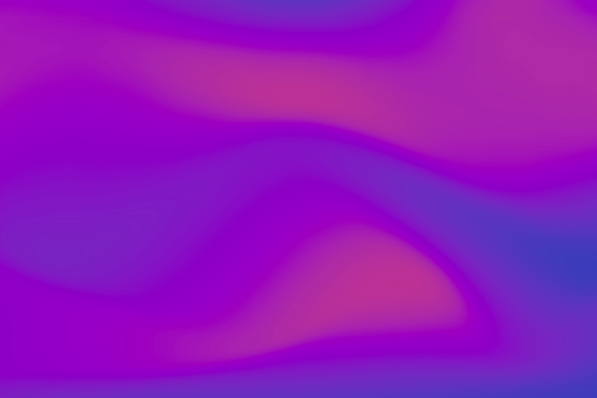
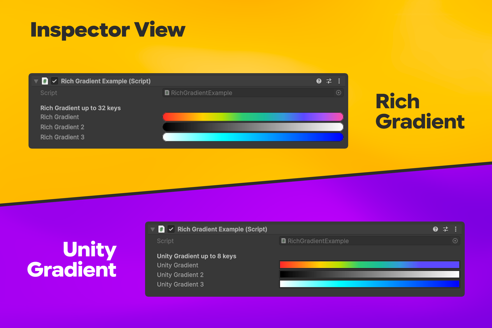
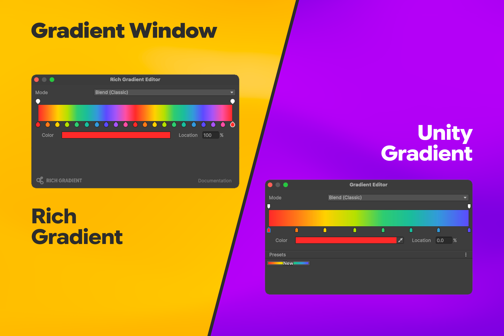
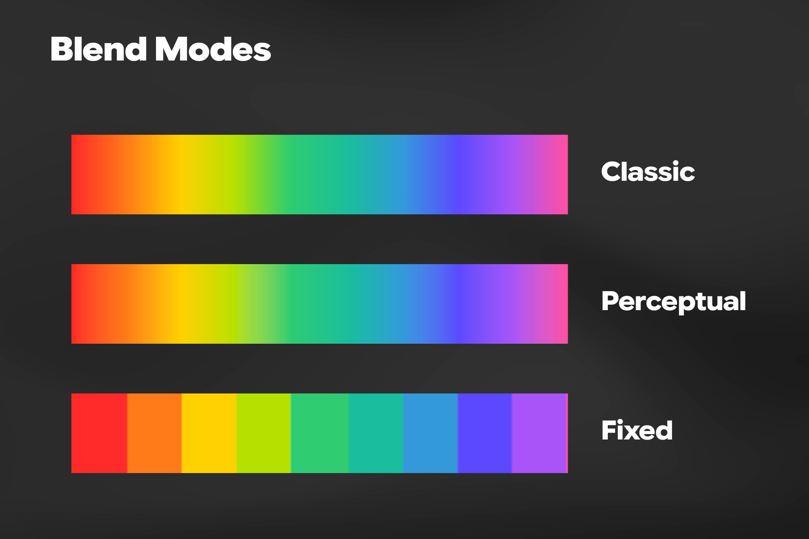

Rich Gradient v1.0.0
Download on Asset Store
Rich Gradient is a serializable gradient type for Unity with up to
32 color keys and 32 alpha keys — four times what
Unity's built-in Gradient allows, which helps with
multi-stop looks like skies, status bars, or stylized lighting. Drop
a RichGradient field into any MonoBehaviour
or ScriptableObject exactly like a regular gradient
field, and get a dedicated editor window, an OKLab-based
Perceptual Blend mode for smoother
transitions between saturated hues, and lossless two-way conversion
to and from Unity's native Gradient.
It has no render-pipeline dependency. Continue with Installation or jump straight to Quickstart.
Import Rich Gradient from the Unity Asset Store. The package files are added under:
Assets/OctopusLab/RichGradientContinue with Quickstart to add your first gradient field.
Add a RichGradient field to any component. A new gradient
is white and fully opaque.
using OctopusLab.RichGradient;
using UnityEngine;
public class GradientUser : MonoBehaviour
{
[SerializeField] private RichGradient _gradient = new();
private void Start()
{
Color mid = _gradient.Evaluate(0.5f);
Debug.Log(mid);
}
}
Evaluate takes a time from 0 to 1 and returns the color,
including alpha. Values outside that range are clamped. Times before
the first key or after the last key use that endpoint key.

RichGradient swatch as it appears in the Inspector.
A serialized RichGradient is drawn as a swatch. Click the
swatch, or focus it and press Space or Enter, to open the editor. It
works much like Unity's own gradient editor:

Mode controls how both color and alpha interpolate
between keys:
| Mode | Color | Alpha |
|---|---|---|
Blend |
Interpolates in RGB | Interpolates |
Fixed |
Holds each key until the next key | Holds each key until the next key |
PerceptualBlend |
Interpolates in OKLab color space | Interpolates |
Perceptual blending keeps transitions between saturated colors more even than RGB blending.
_gradient.Mode = RichGradientMode.PerceptualBlend;
Blend vs. PerceptualBlend across saturated
hues.
All types are in the OctopusLab.RichGradient namespace.
| Member | Description |
|---|---|
Evaluate(float time) |
Returns the color at that time, including alpha. |
SetKeys(colorKeys, alphaKeys) |
Replaces both sets of keys and raises OnChanged. |
ColorKeys / AlphaKeys |
Read or replace one set of keys. |
Mode |
Reads or sets the blend mode. |
ColorKeyCount / AlphaKeyCount |
Current number of keys in each set. |
Clone() |
Returns an independent copy. |
OnChanged |
Raised after the keys or the mode change. |
MaxKeyCount |
32 — the maximum number of color or alpha keys. |
Keys passed to the API are clamped to the 0–1 range, sorted by time, and limited to 32. Extra keys are discarded.
RichGradientColorKey stores Color and
Time. RichGradientAlphaKey stores
Alpha and Time.
var colorKeys = new[]
{
new RichGradientColorKey(Color.red, 0f),
new RichGradientColorKey(Color.yellow, 0.5f),
new RichGradientColorKey(Color.blue, 1f)
};
var alphaKeys = new[]
{
new RichGradientAlphaKey(1f, 0f),
new RichGradientAlphaKey(0f, 1f)
};
FromGradient(Gradient) copies a Unity gradient into a new
RichGradient. ToGradient() copies a
RichGradient back into a Unity Gradient.
ToGradient()keeps at most 8 color keys and 8 alpha keys, because that is Unity'sGradientlimit. Keys are sorted by time first, so the earliest 8 of each type are kept. See also Limitations.
RichGradient fromUnity = RichGradient.FromGradient(unityGradient);
Gradient backToUnity = fromUnity.ToGradient();
Reacting to OnChanged to refresh a texture whenever the
keys or mode change:
private void OnEnable()
{
_richGradient.OnChanged += UpdateTexture;
}
private void OnDisable()
{
_richGradient.OnChanged -= UpdateTexture;
}
private void UpdateTexture()
{
for (int x = 0; x < _texture.width; x++)
{
float time = x / (_texture.width - 1f);
_texture.SetPixel(x, 0, _richGradient.Evaluate(time));
}
_texture.Apply();
}
Why does ToGradient() show fewer keys than my Rich
Gradient?
Unity's Gradient is limited to 8 keys.
ToGradient() sorts by time and keeps the earliest 8 of
each type.
Can I use HDR colors?
Not currently — the editor color field does not support HDR colors. It also does not support the eyedropper, since Unity's editor API does not expose that tool to custom color fields.
Does Rich Gradient depend on URP or HDRP?
No. It has no render-pipeline dependency and works in any pipeline.
ToGradient() keeps at most 8 color keys and 8 alpha
keys, because that is Unity's Gradient limit. Keys are
sorted by time first, so the earliest 8 of each type are kept.
Release notes for Rich Gradient are maintained in the package changelog.
View Changelog